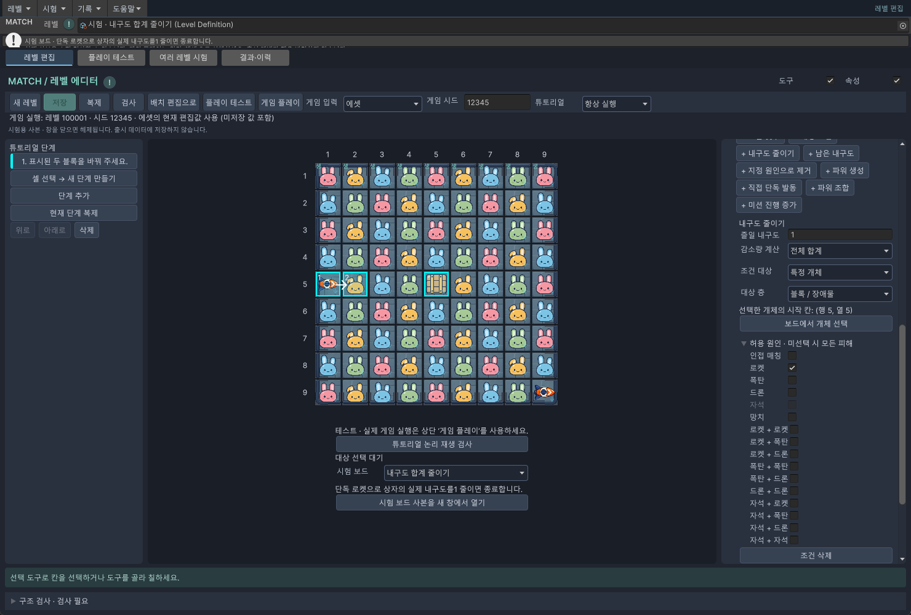
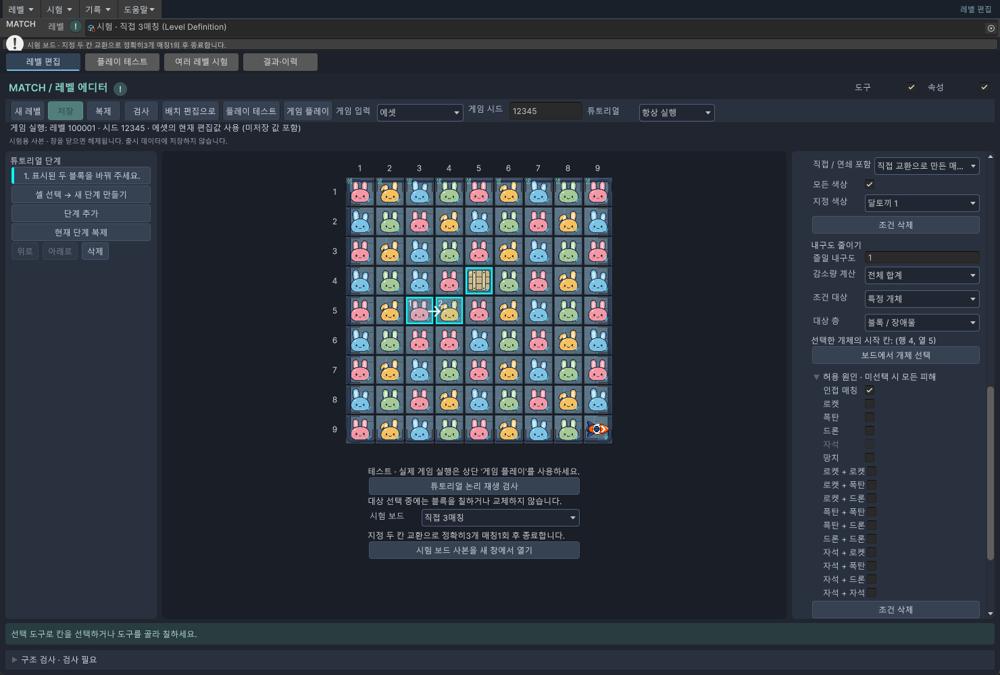

추가 · 튜토리얼 따라하기
③ 장애물 내구도 줄이기
무엇을 움직일지와, 어느 장애물의 피해를 확인할지를 따로 고릅니다.
준비 시험 보드를 여는 방법을 먼저 확인하세요. 사진 속 행·열은 보드 가장자리의 1~9 숫자를 기준으로 읽습니다.
이번 목표: 상자 내구도 3 → 2
내구도는 물건이 얼마나 더 버틸 수 있는지를 나타내는 숫자입니다. 이번에는 상자를 없애지 않고 한 번만 손상시킵니다.
시험 보드 = 내구도 합계 줄이기를 골라 시험 보드 사본을 새 창에서 열기를 누릅니다. 5행 1열에 로켓, 5행 5열에 내구도 3인 상자가 있습니다.
1. 상자를 먼저 고르고 안내 만들기
- 이 시험 창의 기존 1단계를 선택하고 왼쪽 삭제를 누릅니다. 보드는 남겨 둡니다.
- 셀 선택 → 새 단계 만들기를 누르고 5행 5열의 상자를 누릅니다.
- 왼쪽의 대상 샘플에서 내구도 합계 줄이기를 고릅니다. 새 단계로 적용 · 다음에 조작 셀 지정을 누릅니다.
- 아직 조작할 칸이 없으므로 오른쪽 아래 보드에서 교환 두 칸 선택을 누릅니다. 5행 1열의 로켓 → 5행 2열의 일반 블록 순서로 클릭합니다.
누르는 곳은 로켓과 일반 블록이고, 피해를 확인할 곳은 상자입니다. 상자 자체를 바꾸라고 지정하면 안 됩니다.
2. 어느 상자가, 무엇에 맞아, 얼마나 줄어야 할까요?
오른쪽의 내구도 줄이기 조건을 확인합니다.
| 항목 | 값 | 하는 일 |
|---|---|---|
| 줄일 내구도 | 1 | 실제로 1 줄어들면 완료 |
| 감소량 계산 | 전체 합계 | 선택한 대상의 감소량을 합산 |
| 조건 대상 | 특정 개체 | 선택한 상자 하나만 확인 |
| 대상 층 | 블록 / 장애물 | 상자가 놓인 층 |
| 보드에서 개체 선택 | 5행 5열 상자 클릭 | 피해를 받을 물건 지정 |
| 허용 원인 · 미선택 시 모든 피해 | 로켓만 체크 | 다른 공격으로 줄어든 양은 제외 |

안내 문구는 “로켓을 오른쪽 블록과 바꿔 상자를 맞혀 주세요.”로 적습니다. 대상과 조작 셀 자동 강조를 체크하면 조작 칸과 상자를 함께 보여 줍니다. 조건 목록 자체는 게임 화면에 나오지 않습니다.
튜토리얼 논리 재생 검사 후 에셋 / 항상 실행 / 게임 플레이로 확인합니다. 로켓이 상자를 맞히고 내구도가 3에서 2로 줄면 끝나야 합니다.
3. 로켓 대신 일반 3매칭으로 줄이기
아래는 직접 3매칭 시험 보드에 상자를 하나 놓은 설명용 예제입니다. 시험 보드 목록에 새 항목이 추가된 것은 아닙니다.
- 직접 3매칭 시험 보드를 새 창에서 엽니다. 이번에는 준비된 1단계를 지우지 않습니다.
- 상단 배치 편집으로를 누릅니다. 왼쪽 장애물 목록에서 나무상자를 선택해 4행 5열의 일반 블록을 더블클릭하여 바꿉니다. 선택 도구로 상자를 누른 뒤 오른쪽 선택 속성에서 내구도 3을 지정합니다.
- 튜토리얼 편집으로 돌아와 1단계를 선택합니다. 조작 칸은 5행 3열 → 5행 4열 그대로 둡니다.
- 기존 매칭 조건은 그대로 두고 + 내구도 줄이기를 누릅니다.
- 새 조건에서 줄일 내구도 = 1, 전체 합계, 특정 개체, 블록 / 장애물을 고릅니다. 보드에서 개체 선택을 누르고 4행 5열 상자를 클릭합니다.
- 허용 원인에서 인접 매칭만 체크합니다. 조건 연결 = 모두 충족으로 둡니다.
- 안내 문구를 “상자 옆에서 분홍 달토끼 3개를 연결해 주세요.”로 고칩니다. 논리 검사 후 실제 게임을 실행합니다.

교환으로 4열에 분홍 3개가 연결되고, 그 옆 상자의 내구도가 1 줄어들어야 끝납니다. 이번에는 3매칭 조건과 내구도 조건을 함께 만족해야 합니다.
4. 다른 조건으로 바꾸는 방법
| 원하는 안내 | 바꿀 설정 |
|---|---|
| 다른 상자를 맞히기 | 해당 단계 → 조건의 보드에서 개체 선택 → 새 상자 클릭. 공격이 닿도록 조작 두 칸도 다시 지정합니다. |
| 상자 두 개를 각각 1씩 손상 | 시험 보드 각 대상의 내구도 줄이기를 참고합니다. 대상은 종류 또는 영역, 계산은 각 대상마다, 줄일 내구도는 1입니다. |
| 여러 상자에서 합쳐서 2 감소 | 대상을 종류 또는 영역으로 지정하고 전체 합계 = 2로 설정합니다. 한 상자에서 2가 줄어도 합계에 포함됩니다. |
| 남은 내구도가 꼭 2 | 기존 감소 조건을 삭제하고 + 남은 내구도를 추가합니다. 대상 지정 후 정확히 = 2. 3→1이 되면 완료되지 않습니다. |
| 로켓으로 완전히 제거 | + 지정 원인으로 제거, 개수 1, 대상 지정, 허용 원인 로켓. 시험 보드 로켓으로 제거를 참고합니다. |
조건을 바꾸려는데 현재 단계에 샘플 조건 추가를 누르면 기존 조건 아래에 더해집니다. 바꿔 끼우려면 필요 없는 조건의 조건 삭제를 먼저 누르세요. 단계 전체를 삭제할 필요는 없습니다.
허용 원인을 하나도 체크하지 않으면 내구도 감소는 모든 피해를 셉니다. “로켓으로만”, “인접 매칭으로만” 가르치려면 해당 원인만 체크해야 합니다.
변경 이력 · 확인 범위
2026-10-08 · 추가 · 짧은 기능 소개에서 실제 선택 순서·입력값·변경·확인 방법을 갖춘 예제로 확장했습니다. 사용자 요청에 따른 초보자용 안내입니다.
Windows / Unity 6000.3.10f1. 임시 시험 보드의 실제 에디터 화면 캡처와 논리 재생을 확인했습니다. 실기기 터치 검사는 이번 문서 작업에 포함하지 않았습니다. 화면 속 시험 보드는 출시 레벨을 변경하지 않습니다.
문서 표시 확인 · 2026-10-08 · Chrome 1440px / 390px · 내부 링크·이미지 정상. 폴더 복사 후 오프라인 파일 열기와 목차 왕복 확인.